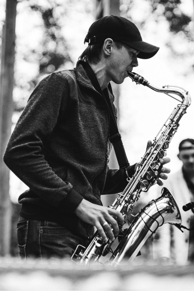
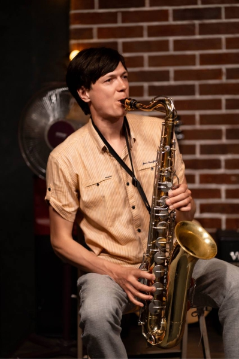
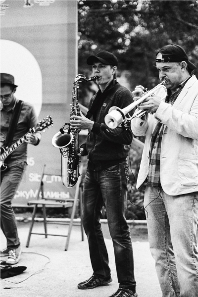
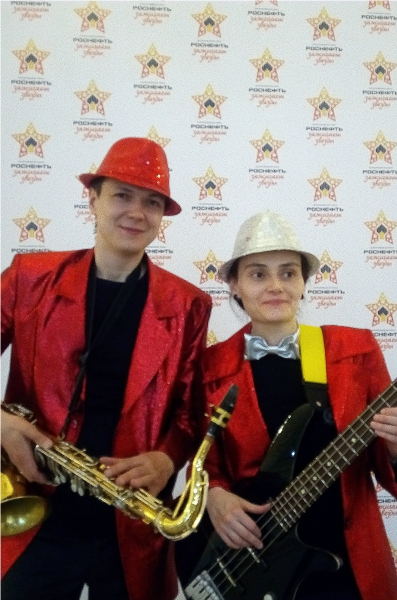

Я широкопрофильный саксофонист из г. Ачинска. Играю в разных стилях музыки: современная популярная, клубная, ретро, джаз, латина и т.д. Огромный опыт работы на самых различных площадках и в различных коллективах. Очень внимательно отношусь к качеству выступления, для чего помимо качественного музыкального оборудования, применяю современные технические средства.
Помимо исполнительской деятельности, работаю в музыкальной школе, где преподаю уроки игры на саксофоне, флейте, кларнете. Веду ансамбль.